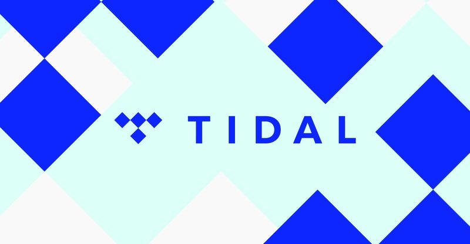
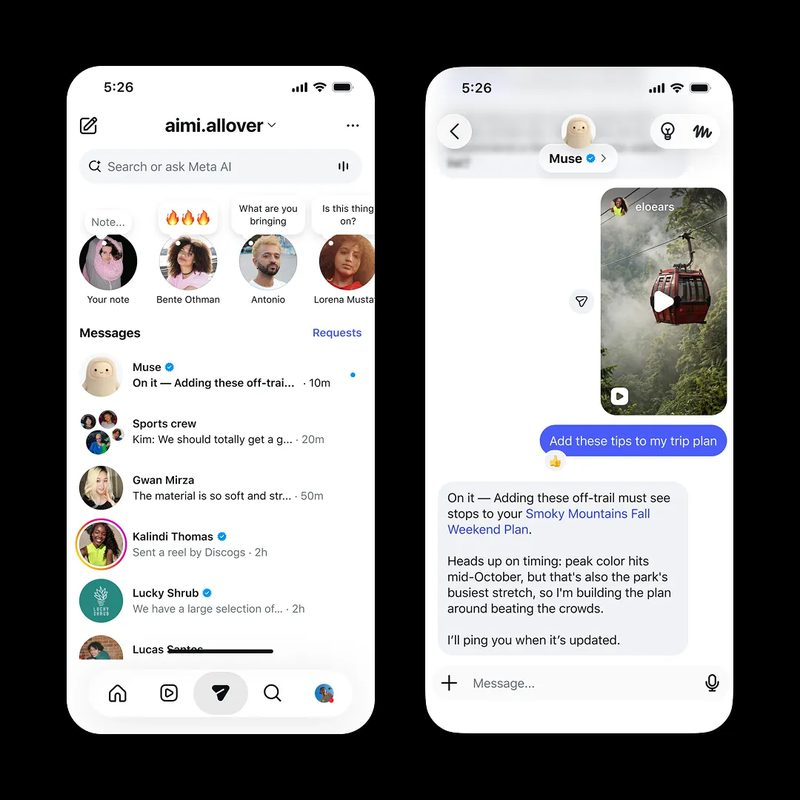
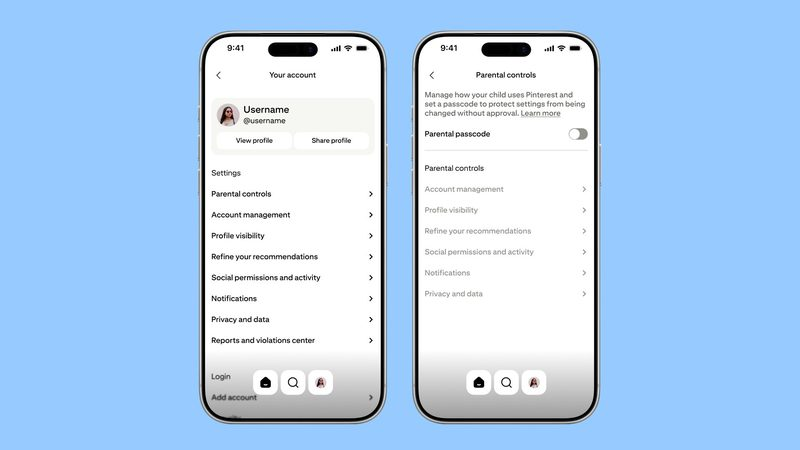
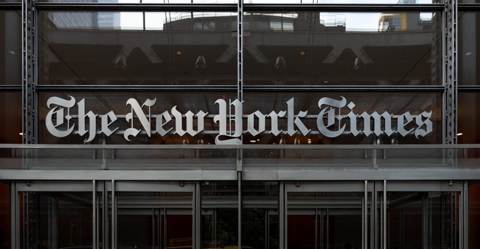
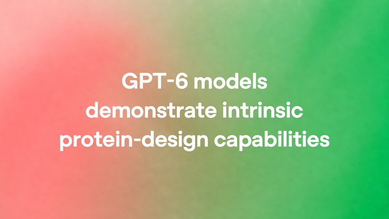
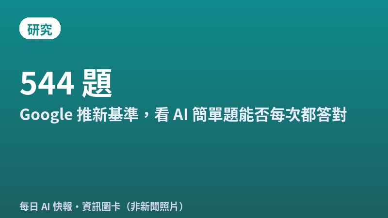
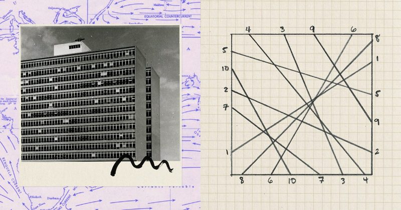

今日頭條
Tidal 將下架純 AI 生成歌曲
PLUS：Instagram 私訊可直接找 Meta 的 Muse
本期重點：音樂串流 Tidal 宣布 12 月 9 日起拒收並下架完全由 AI 生成的歌曲；Meta 把 AI 代理 Muse 放進 Instagram 私訊。另有 Pinterest 讓家長調整青少年看到的 AI 內容、《紐約時報》要供稿攝影師暫不用 Photoshop 2027、OpenAI 公布 GPT-6 設計蛋白質的實驗結果、Google DeepMind 推出測 AI 基本題穩定度的新基準、Anthropic 訪談 58 家企業的 AI 工作報告，以及 Dell AI 伺服器營收年增 291%。

圖：The Verge新聞#1Tidal 12 月 9 日起下架純 AI 生成歌曲
音樂串流平台 Tidal 11 月 24 日宣布，12 月 9 日起拒收並下架判定為完全由 AI 生成的歌曲，預計刪除約 2,900 萬首，每天拒收約 8 萬到 8.5 萬首投稿。Tidal 表示，過去 90 天新上架曲目有 43% 是純 AI 生成，其中 96% 完全沒人播放；用 AI 輔助、仍有人類創作成分的歌曲照常可上架。
💡 跟你有什麼關係：用串流聽歌的人，推薦清單裡混進大量 AI 罐頭歌的情況可能減少；其他平台如 Spotify、Apple Music 目前多採標示而非下架，之後是否跟進值得觀察。
⚠️ Tidal 用 Ircam Amplify 偵測工具與後設資料判斷，官方承認難免有少數誤判，可提出申訴；刪除數量各媒體引用 2,700 萬到 2,900 萬不等。
📰 原始來源：The Verge（2026-11-24） ↗
圖：TechCrunch／Meta新上線#2Instagram 私訊可直接找 Muse 幫忙
Meta 11 月 24 日開始在 Instagram 私訊推出 AI 代理 Muse，用戶不必切換 App，就能把貼文轉給 Muse，請它補充背景、把咖啡店加進旅遊行程，或找黑色星期五的鞋子優惠。收藏的貼文和 Reels 也能請 Muse 整理成資料夾，或把食譜影片變成購物清單。
💡 跟你有什麼關係：常在 Instagram 存美食、旅遊貼文的人，之後可以直接請 AI 整理成清單或行程；但這也代表 AI 會讀取你分享給它的內容。
⚠️ 首波只在美國、加拿大、墨西哥、日本、新加坡的 iOS 與 Android 推出，收藏整理功能先在美、加上線，台灣尚未開放。Meta 表示沒有用戶同意不會分享或發送任何內容。
📰 原始來源：TechCrunch（2026-11-24） ↗
圖：Pinterest政策#3Pinterest 讓家長調整孩子看到的 AI 內容
Pinterest 11 月 23 日推出新的「家長控制」頁，把青少年帳號的設定集中在一處，新增可調整推薦中 AI 生成內容多寡、通知數量與影片自動播放的選項。所有設定都可用家長密碼鎖定，開啟後青少年要放寬限制須經家長同意。
💡 跟你有什麼關係：家長不必在層層選單裡找設定，就能減少孩子滑到的 AI 生成圖片；也可順便從同一頁連到手機的螢幕使用時間與定位設定。
⚠️ 官方說明是「調整數量」，不是完全擋掉 AI 內容；AI 圖片若沒被標示出來，仍可能出現在推薦裡。
📰 原始來源：Pinterest Newsroom（2026-11-23） ↗
圖：The Verge／Marcin Golba／NurPhoto via Getty Images新聞#4《紐約時報》要攝影師暫不用 Photoshop 2027
The Verge 11 月 24 日報導，《紐約時報》寄信要求供稿攝影師替該報工作時，不要使用 Adobe Photoshop 2027（28.0.0 版之後），因為新版部分功能用了 AI，且不容易察覺。這些功能可能在照片的 C2PA 後設資料裡留下「AI 生成或編輯」的標記，紐時發言人已證實這項要求。
💡 跟你有什麼關係：照片上的「AI 標記」越來越普遍，連只調色的新聞照都可能被標成 AI，讀者看到標記時要知道它不一定代表照片造假。
⚠️ 紐時未說明是哪些 Photoshop 功能，Adobe 截至報導時未回應。
📰 原始來源：The Verge（2026-11-24） ↗
圖：OpenAI研究#5OpenAI：GPT-6 能設計蛋白質，部分通過實驗
OpenAI 11 月 24 日公布，GPT-6 系列模型只靠推理和寫程式就能設計新的蛋白質形狀與序列。和 Onava 合作的實驗測了 322 個小型結合蛋白、5 個目標，其中 35 個（10.9%）確認能結合目標，包含癌症相關的 PD-L1。
💡 跟你有什麼關係：設計蛋白質是開發新藥與檢測試劑的關鍵步驟，通用型 AI 若能幫忙，研究者未來可能用一般文字描述就請 AI 提出設計。
⚠️ 官方說明篩選候選仍靠 Boltz-2 等專門模型，尚未證明 AI 能獨立從頭完成；從序列預測完整結構仍遠落後專門模型，能結合也不等於有療效。
📰 原始來源：OpenAI（2026-11-24） ↗
資訊圖卡（總幕僚長製圖，非新聞照片）研究#6Google 推新基準，看 AI 簡單題能否每次都答對
Google DeepMind 11 月 24 日在 Kaggle 推出「Humanity's First Exam」（HFE）基準，收錄 544 道涵蓋 20 種基礎能力的簡單文字與圖片題。它不看 AI 能不能偶爾解出難題，而是看同一題和稍微變化的版本能不能每次都答對。
💡 跟你有什麼關係：一般人用 AI 多半問日常小事，答案時對時錯最讓人困擾；這類基準有助看出哪個模型比較穩定可靠。
⚠️ Google 同時舉辦到 12 月 15 日的 Kaggle 競賽，徵集目前模型仍會答錯的日常題目；榜單由 Google 自己主辦。
📰 原始來源：Google Blog（2026-11-24） ↗
圖：Anthropic觀點#7Anthropic 訪談 58 家企業：AI 少裁員、但少招人
Anthropic 11 月 23 日發表報告，訪談 58 家美國企業客戶共 66 次。多數公司說 AI 的價值來自做得更多、更快，而不是砍成本；因 AI 而裁掉本國員工的例子很少，但多數公司表示因 AI 而少招人，也減少外包，特別是海外外包。
💡 跟你有什麼關係：對上班族來說，AI 的影響可能先出現在職缺變少、外包減少，而不是直接裁員；報告也指出，價值最高的做法是重新分工，讓員工負責整段流程。
⚠️ 受訪者都是 Anthropic 客戶，並非隨機或具代表性的樣本，價值多為受訪者自述。
📰 原始來源：Anthropic（2026-11-23） ↗圖：Dell Technologies資金#8Dell AI 伺服器營收 220 億美元，年增 291%
Dell 美東時間 11 月 24 日盤後公布財報，第三季營收 549 億美元、年增 103%，其中 AI 伺服器營收 220 億美元、年增 291%。季末 AI 訂單積壓達 1,323 億美元，全年營收預估上調到 2,020 億美元，董事會另增加 250 億美元庫藏股額度。
💡 跟你有什麼關係：AI 伺服器需求常被當作台灣伺服器代工與零組件廠的景氣指標，Dell 的訂單動向可能牽動相關台股與基金。
⚠️ 訂單積壓不等於已入帳營收，官方表示訂單都經客戶資金、場地與電力條件審查，實際出貨時程仍有變數。
📰 原始來源：Dell Technologies（2026-11-24） ↗✅ 2026/11/25（三） 可以做：家裡有青少年用 Pinterest 的話，可以到新的「家長控制」頁看看 AI 生成內容、通知與影片自動播放的設定，並開啟家長密碼鎖定。
🗂️ 過去 14 天